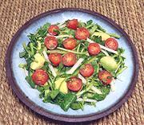

|
Watercress SaladTrinidad | ||||
| Makes: Effort: Sched: DoAhead: |
2-3.4 # ** 55 min Short |
This is a very fine salad durable enough for buffet service. The dressing will keep the Avocado from discoloring for a few hours. | |||
|
|
12 12 7 15 14 ------- 1/3 1/2 1 1/2 1/4 1/4 -------- |
oz oz oz oz --- c oz t c t t ---- |
Watercress Jicama Cucumber (1) Grape Tomatoes Avocado -- Dressing Lime Juice Shallot Sugar Olive Oil ExtV Salt Pepper, black --------- |
Make - (55 min)
|